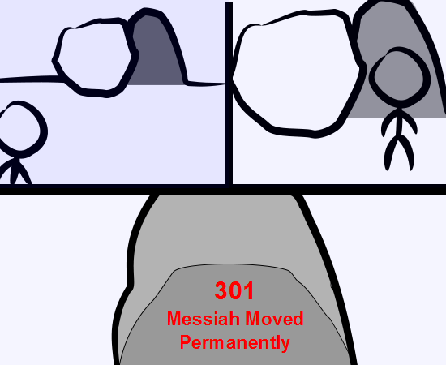

Comic JK 902
When I Feel Like It
⇤
<
?
>
⇥

⇤
<
?
>
⇥
Forum
.
RSS
.
Digg
.
Facebook
.
Reddit
.
Twitter
.
Stumbleupon
Enter your thoughts on number 902 here. Please, no spamming, trolling, coming back from death or phreaking. I'm phreaking out, man! Please don't do this. You'll never catch up to XKCD this way! At least you could go to four per week, or add a bonus comic or two every month. If you add <!doctype html> at the beginning the page looks better in IE9 (not that I use it of course). ^If you use IE, you deserve to have it look bad. >>even those who don't personally choose IE, but have to do so because of company/school policy ? >>You're still complicit in their crimes. You were the chosen one!! my tuesdays and thursdays -> ruined. >+1 >Dear ComicJK, please consider updating Tue/Wed/Thu. >>Or Tue/Thu/Sat. >>>Seconded >>>>If you update on the days when xkcd doesn't, we won't have to deal with any jarring gaps in the stream of content. >>>>>There's still Sunday. If it comes with an increase in quality, I'm okay with this. Wait, what does that do to the predicted XKCD/JK catchup? >Parallel lines don't intersect. >>NNNNOOOOOOOOOOOOOOO >>One bonus comic a month and we'd catch up in 11 years. >>>Deal! >>In Euclidean space. >> +1 >>>Can't we just do like Firefox did and inflate the version number? Just skip to 1041 and we'll be right there. >>>> Or post 140 simultaneous comics as a May Day present? >>>>>+1 I guess he's serious about only 3 per week. No new comic today (Tuesday) makes me very sad :-( >JK, when you're feeling up to it, please return to the normal schedule - it's the only way you'll overtake xkcd... This is where it all went downhill